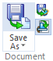

Automatically open a cloned draft document
The Clone Draft command makes a copy of the active draft document and places it in the same Item Revision as the original. When you set the option Open cloned Draft and then choose the Clone Draft command, the newly created draft document opens for you automatically so that you can work in the new document.
-
On the Teamcenter tab→Document group, verify the Open cloned Draft option is selected as shown:

-
Select the Teamcenter tab→Document group→Save As list→Clone Draft command.
The active draft is copied to the same Item Revision and the newly created draft document is opened so that you can work in the new document.
-
(Optional) To verify you are working in the newly cloned document, choose the Teamcenter tab→Properties group→File Properties command and view the Filename property.
Draft documents created by the Clone Draft command include an increment ID added to the filename. For example, filename_1.dft, filename_2.dft, and so on.
How do I
Open a Teamcenter-managed documentOpen a Solid Edge document from Teamcenter rich client
Open a Solid Edge document from Active Workspace
Open a non-Solid Edge document in a Teamcenter-managed environment
Save a new Teamcenter-managed document
Revert documents to the version in Teamcenter
Save an existing design to a different Item type (SEEC)
Exclude Draft documents when using a Save As command (SEEC)
Save a new document to an existing Teamcenter item
Assign a Teamcenter project to an item
Learn more
Using Download Options - OverridesUsing multiple revisions of documents
Resolving problems identified in the Issues column (New Document dialog box)
Using multifield keys in the Teamcenter managed environment
Using Teamcenter variants
Meta model
Look up more details
Hide CPD optionRevert command (SEEC)
Save As - New Item command
Exclude Draft option
Clone Draft command
Open cloned Draft option
Save to Existing command
New Document dialog box (SEEC)
Assign Project ID command
Select Projects dialog box